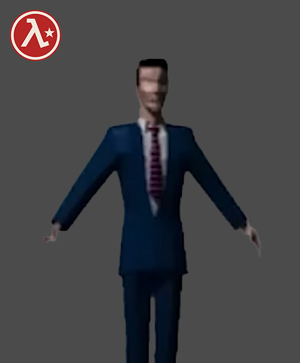
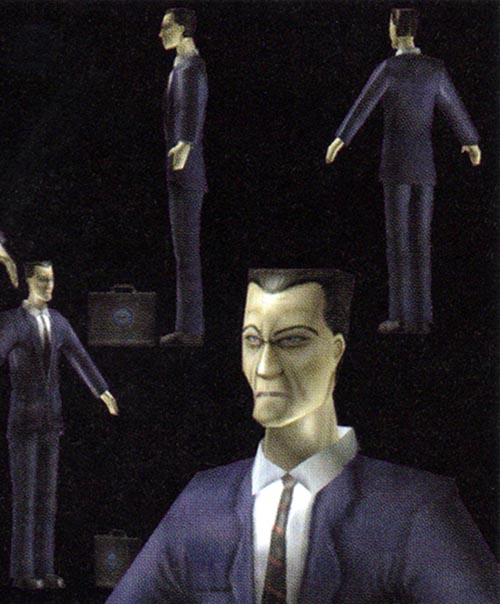
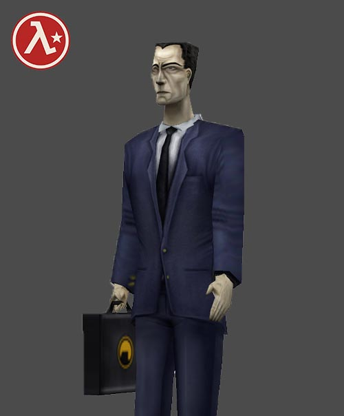
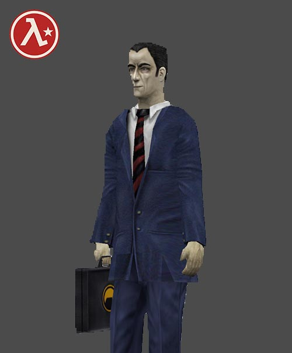
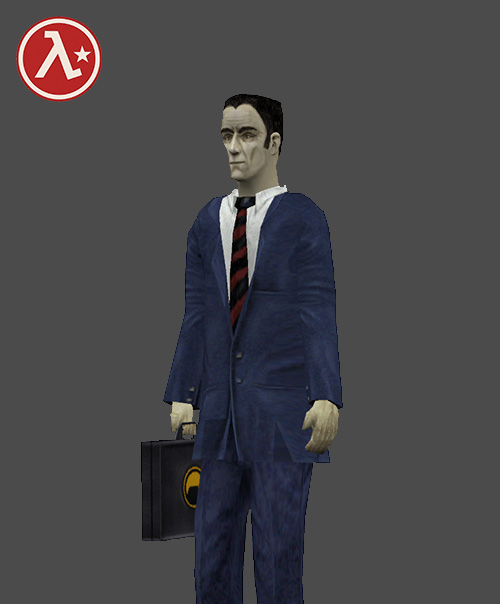
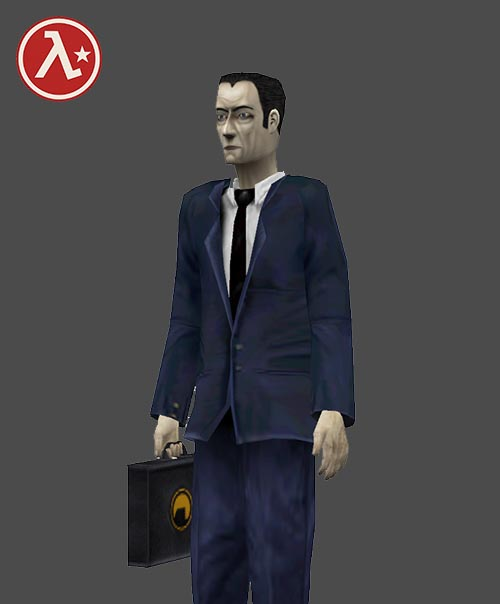
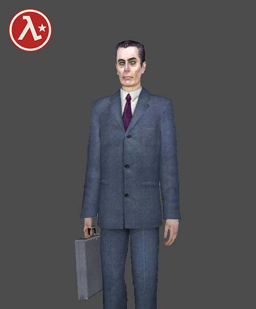
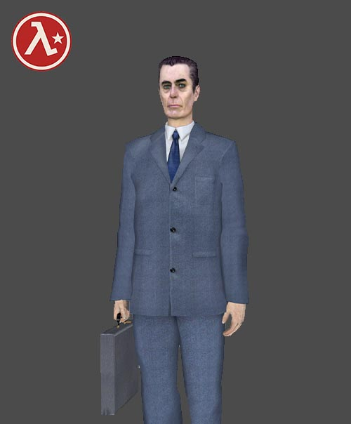
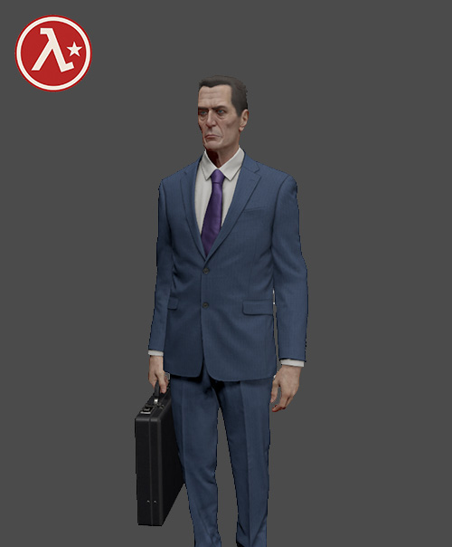

KİM BU G-MAN?
G-MAN,Valve tarafından geliştirilen Half-Life serisinin en ikonik ve gizemli karakterlerinden biridir. Takım elbisesi, elindeki evrak çantası ve donuk yüz ifadesiyle tanınan bu karakter, serinin başından itibaren oyuncuların karşısına çıkmış, ancak kimliği ve amacı hiçbir zaman tam olarak açıklanmamıştır
Oyuncular onun hakkında ancak oyunun müsade ettiği kadarıyla gözleme dayalı yorumda bulunabilir. Oyunlardan göründüğü kadarıyla G-Man olaylara doğrudan müdahale etmeden ''İşverenlerinin'' çıkarları doğrultusunda yön verir. Zamanı bükebildiği, mekânlar arasında serbestçe hareket edebildiği görülür. (Ama bunları yapmasına sebep olan motivasyon nedir - iş verenleri kimdir bilinmez)Half-Life
Rezonans çağlayanına neden olan Xenium'u Doktor Breen'e teslim etmesi dışında oyun boyunca G-Man'in hikayeye doğrudan bir katkısı yoktur ancak G-Man Freeman'ı tüm yolculuğu boyunca gizlice izler ve hikayenin sonunda Freeman'ı Xenden çıkarıp ona iş teklifi yapar. Bu sayede oyunun hikayesel çizgisini komple değiştirir.
Half-Life 2
Gordon Freeman'ı bekleyişten çıkarırken söylediği repliklerden biri:
Half-Life yapım aşamasındayken GMAN karakterinin kaderi net olarak belirli değildi. Kim olduğu yıllar içinde şekillendirildi. 3D modelinin ise en baştan itibaren çok değiştiği söylenemez.









